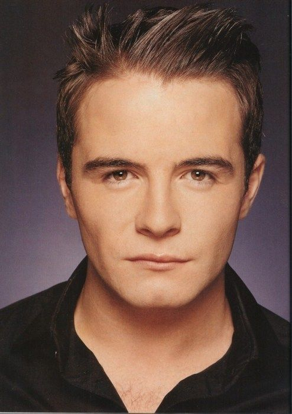
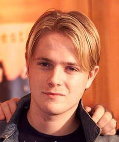

It was in 1997 in Sligo,Ireland where westlife members, Kian Egan, Mark Feehily and Shane Filan were discovered by "Boyzone's" manager Louise Walsh! He gave them an audition to be in his new Boyband "Westlife", but out of all the 6 boys in Ioyou only Kian, Mark, and Shane got through, then in Ireland the auditions continued for one more spot but 2 joined instead; Nicky Byren and Bryan Mcfadden. Later they were all signed to a record label by Simon Cowell and in 1999 Westlife released their first single "Swear it again." The amusing part with the band is their vocals, i just love their songs and choreography.
Mark, Shane and Kian grew up in Sligo City, they met at Summerhill College where they would perfom as leads in school plays.
Markus Feehily. born in 1980 May 28.He is an irish singer songwriter. He is one of the lead singers of the vocal group Westlife. He is the youngest in the band.

Francis Egan John Kian. He was born in 1980 April 29 Sligo General Hospital, his eye color is blue and loves to play the piano and his electric guitar. He is a singer, multi-instrmentalist and songwriter. He is a member of International group Westlife.
Shane Steven Filan. Born in 1979 July 5 . He loves horses and his eye color is hazel or rather green. He is one of the lead singers in the band.
Nicky and Bryan's home town is Dublin city.
Nicholas Benard James. Born in 1978 october 9. Loves football, blue is his eye color. He is a singer, songwriter, radio presenter,dancer, television presenter and former proffesional footballer. He is the band's oldest member.
Bryan Nicholas Mcfadden. Born in 1980 April 12. Loves to dance, he would attend dance classes on sartudays and mondays while young. His eye color is also blue. He is a singer, songwriter and television presenter.